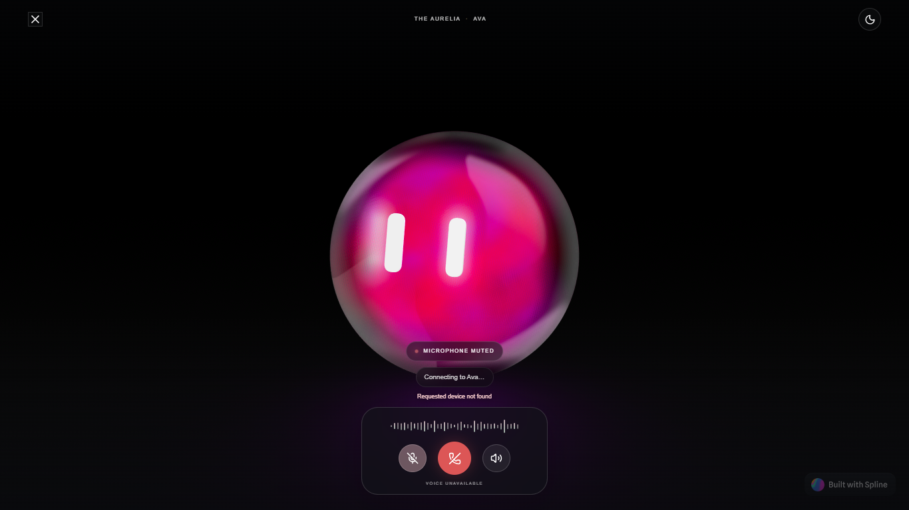
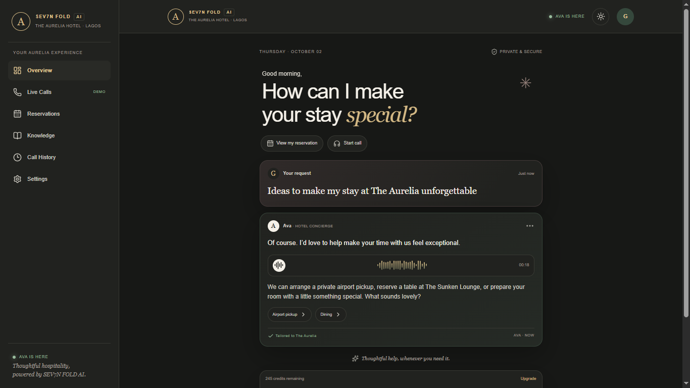
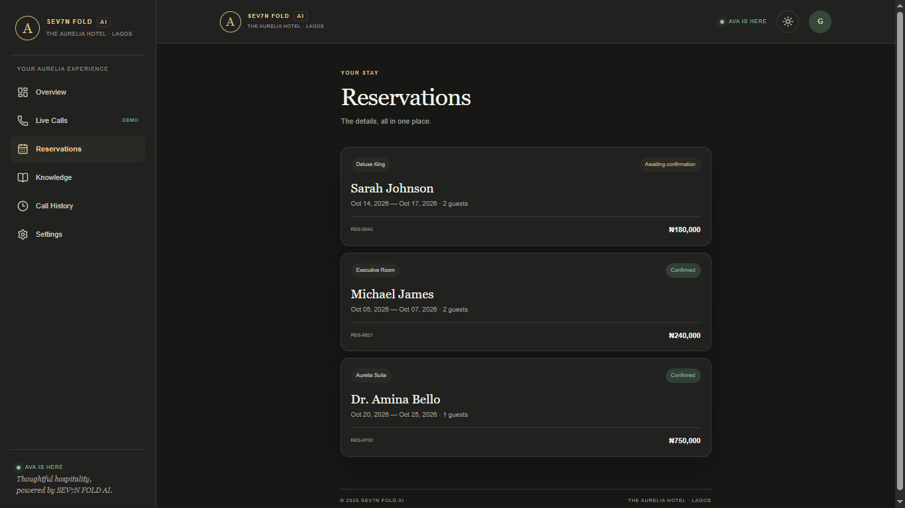
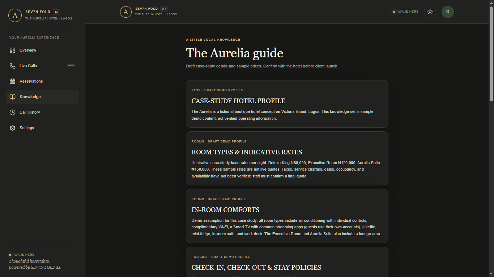
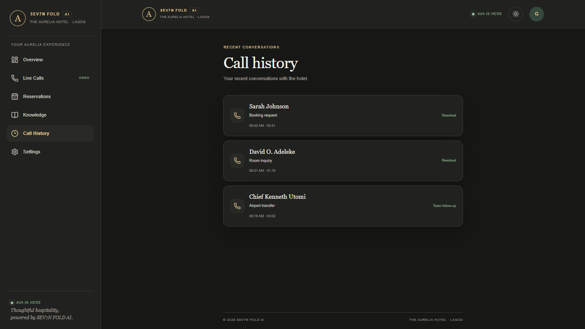
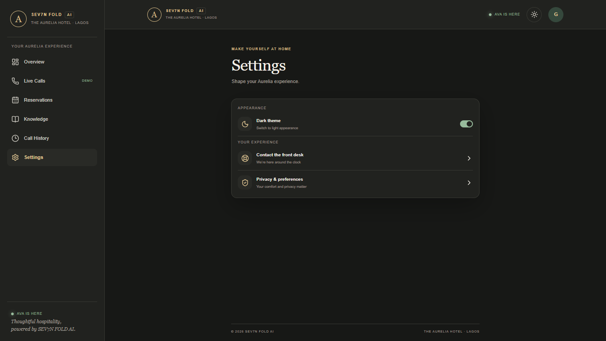

SPEAK
NATURALLY
Voice-first interaction for guests who want a direct, conversational way to get help.
SEV7N FOLD / CONVERSATIONAL TECHNOLOGY
PRODUCT 02 — AI CONVERSATIONAL SYSTEMS
AVA is an AI-powered hospitality assistant designed to make guest interactions more natural, responsive, and accessible through real-time voice intelligence.
DISCOVER AVA ↓
A guest should be able to ask naturally and get useful help in return.
AVA is being developed to welcome guests, answer hotel questions, share relevant information, and guide supported requests through a conversational voice experience.
THE OPPORTUNITY / 02
Guests often need a quick answer before booking or during a stay. Meanwhile, hotel teams handle repeated questions across calls and messages, often while managing everything else at the front desk.
AVA explores how intelligent assistance can make routine information easier to reach and give staff more room for the moments that need a human touch.

Designed around the guest’s stay: a welcoming assistant, useful next steps, and a consistent place to find help.
CONTEXT / CONVERSATION / SERVICEVoice-first interaction for guests who want a direct, conversational way to get help.
Hotel-aware responses shaped around the information a guest needs in that moment.
Handle supported requests and guide guests toward the next useful action.
Bring hotel staff into requests that need their judgment, care, or direct action.




Ready when the guest is.
Receiving the guest’s voice.
Interpreting the request and context.
Responding in a natural voice.
Taking a supported next step.
Bringing a staff member in when needed.
THE PRINCIPLE / 07
AVA is designed to support hospitality professionals, not replace them. The aim is to make routine help more available while protecting the care and judgment that make a guest experience feel personal.
AVA / SEV7N FOLD